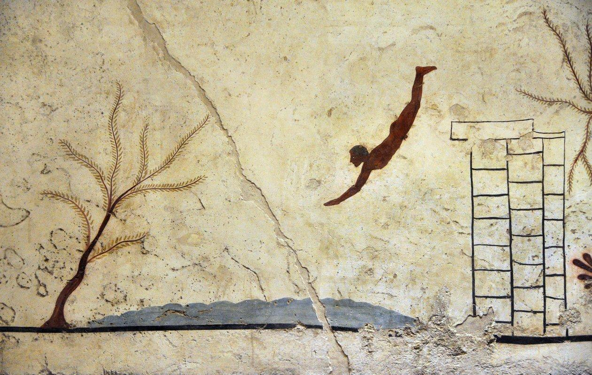

Història · Arqueologia · Fonts
MARE
NOSTRUM
Divulgació acadèmica sobre l’Antiguitat al Mediterrani
Descobrir el projecte ↓Tomba del Nadador · Paestum · c. 480–470 aC
El projecte
El Mediterrani
com a espai històric.
Mare Nostrum és un projecte independent de divulgació acadèmica dedicat a l’estudi de les societats mediterrànies de l’Antiguitat.
Una mirada centrada en les cultures, els conflictes, els intercanvis i les connexions que van donar forma al món mediterrani.
Continguts
Explora
Mare Nostrum.
Estudis
Articles
Estudis sobre les societats i cultures de l’Antiguitat mediterrània.
Testimonis
Fonts
Textos, inscripcions, monedes i testimonis arqueològics contextualitzats.
Bibliografia
Ressenyes
Lectures crítiques de bibliografia sobre el món antic.
Debats
Historiografia
Problemes, conceptes i interpretacions de la Història Antiga.
Mare Nostrum
Conèixer el món antic
és també entendre les seves connexions.
Sobre el projecte
Un projecte
en construcció.
Mare Nostrum es troba actualment en fase de desenvolupament. El projecte creixerà progressivament amb nous estudis, fonts, ressenyes i continguts sobre l’Antiguitat mediterrània.